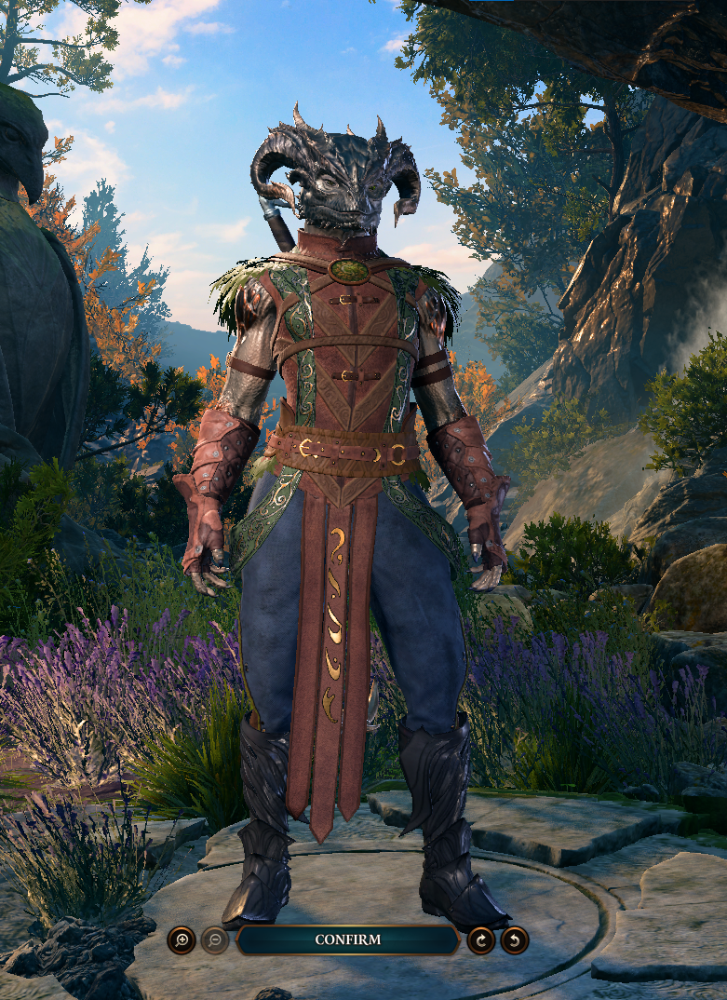

Tav is a dragonborn, born in the city of Baldur's Gate. Even in such a diverse city, Tav
had always faced discrimination from the townsfolk due to her unique appearance. As such, she forwent
the city and embraced nature and its creatures as a druid.